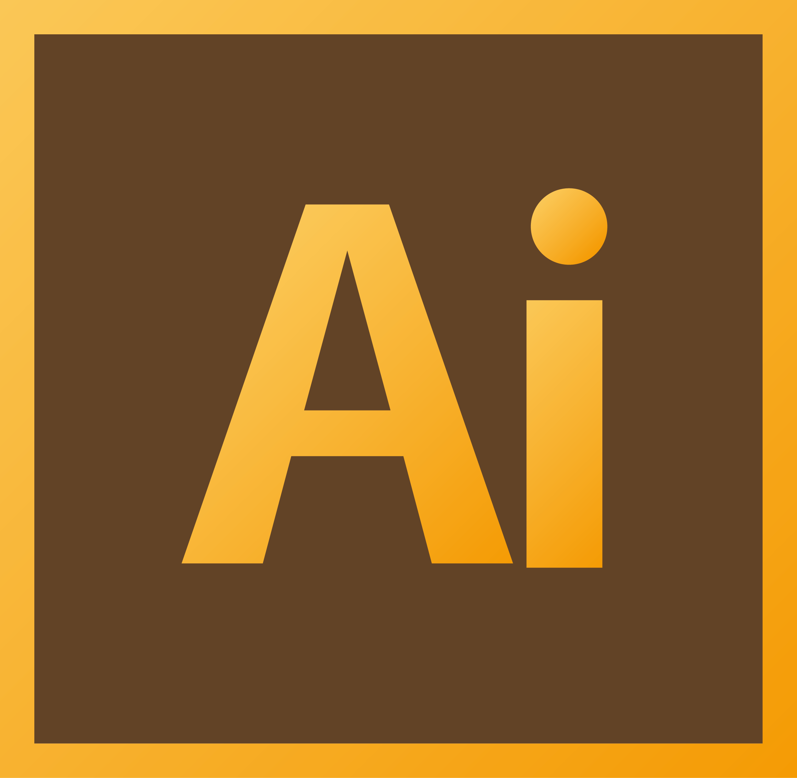
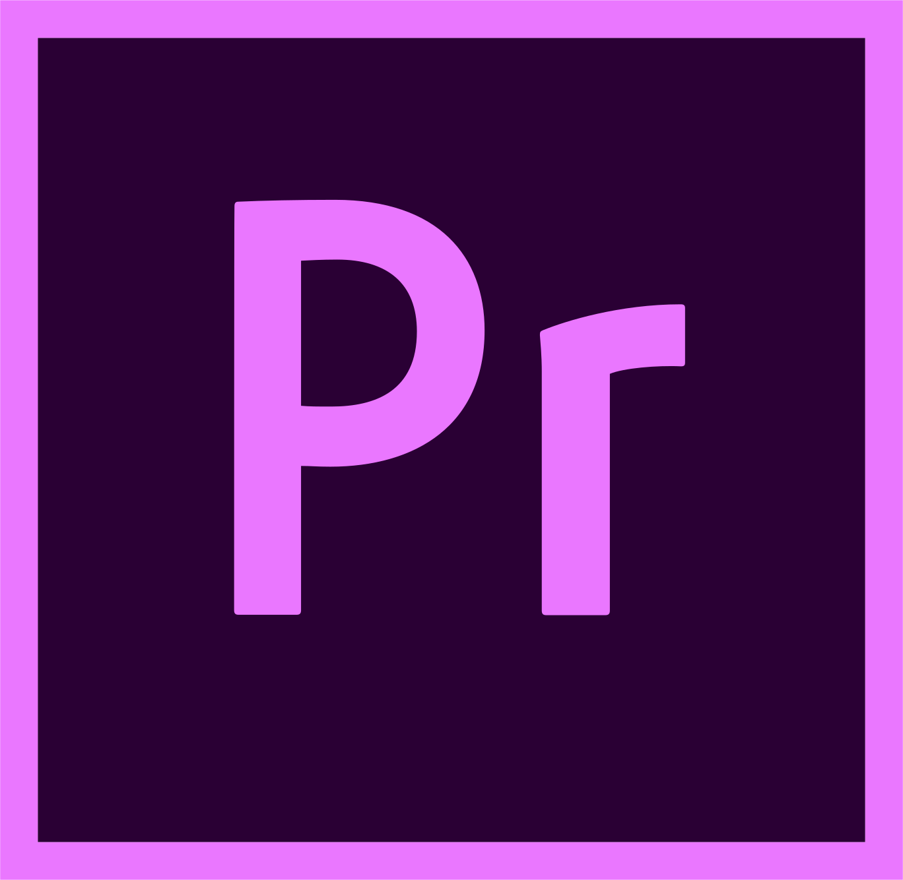
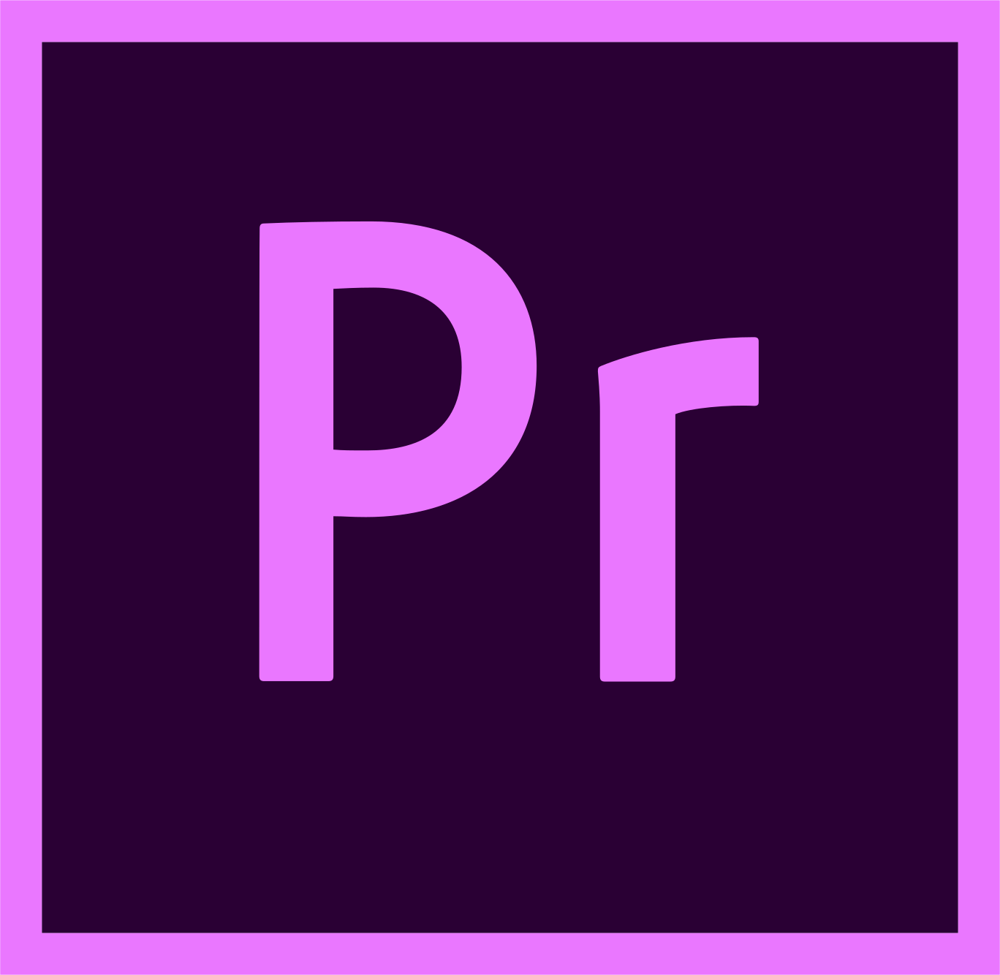
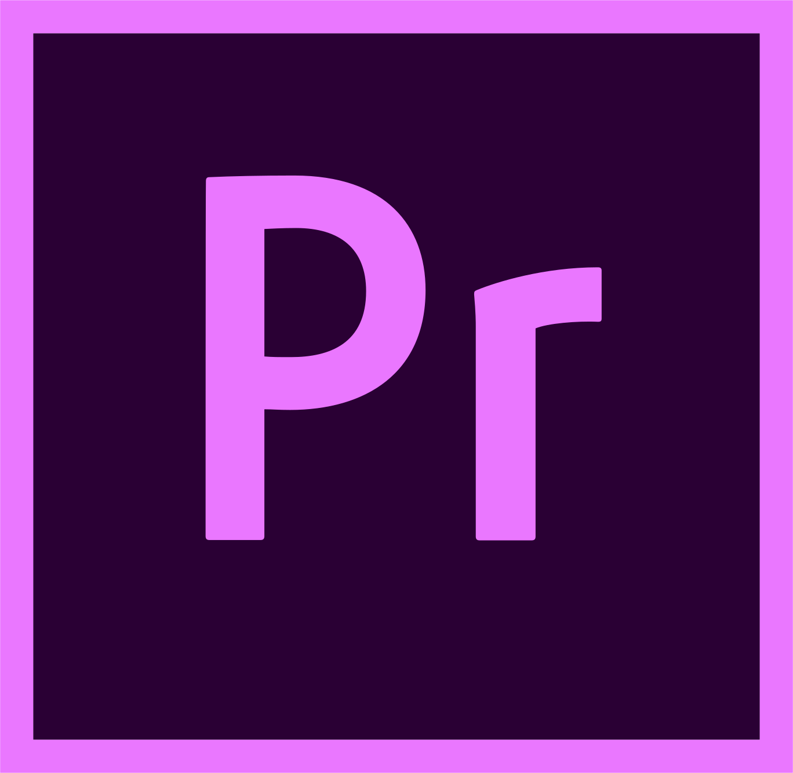

ABOUT
I'm an advertising creative with 10 years of experience.
My eagerness to explore has led me to transition to Multimedia Design,
Frontend Development and Content Creation.
In my free time I enjoy reading about blockchain technology, learning Danish
and becoming better at chess.
MY CURRENT STACK

 


